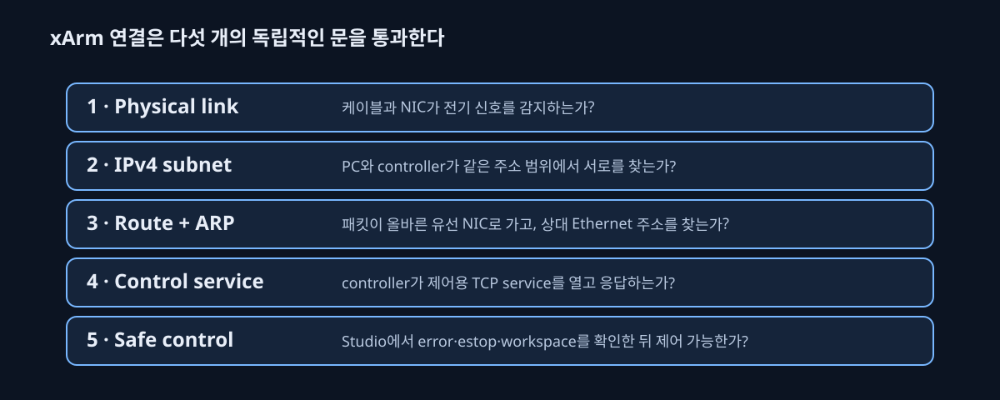

케이블은 연결됐는데, 왜 xArm은 보이지 않았을까?
PC와 xArm controller를 Ethernet으로 직접 연결하면, 케이블이 꽂혔다는 사실과 robot을 제어할 수 있다는 사실 사이에 여러 단계가 있다. 이 이슈는 고장으로 단정하지 않고 각 단계를 분리해 확인해 연결을 복구한 과정이다.


먼저: “연결됨”은 하나의 검사가 아니다

각 계층은 앞 단계가 성공해도 자동으로 성공하지 않는다. 예를 들어 carrier는 케이블 반대편의 전기 신호를 감지했다는 뜻일 뿐, PC가 올바른 IP 주소를 가졌는지나 controller 프로그램이 실행 중인지는 말해 주지 않는다.
문제의 원인: PC가 robot network로 갈 길을 몰랐다
초기에는 유선 port의 physical link가 살아 있었지만 ping이 실패했다. 이는 케이블 단선보다 PC의 IPv4 주소 또는 route가 잘못됐을 가능성을 뜻한다. 직접 연결에는 공유기가 없으므로 PC가 자동으로 올바른 robot-network 주소를 받지 못할 수 있다. 동시에 Wi‑Fi가 비슷한 주소 대역을 쓰면 OS가 패킷을 Wi‑Fi로 보낼 수도 있다.
진단과 해결을 단계별로
- Physical layer: cable, controller power, PC NIC의 link/carrier를 확인했다. 이 단계에서는 robot을 움직이지 않는다.
- IPv4 subnet: PC 유선 NIC에 controller와 같은 /24 주소 범위의, 서로 겹치지 않는 수동 주소를 배정했다.
- Route: controller 주소로 보내는 패킷의 출력 NIC가 robot cable의 NIC인지 확인했다. 진단 동안 충돌 가능한 Wi‑Fi route를 분리했다.
- ARP와 ping: PC가 같은 Ethernet 선에서 controller의 hardware address를 찾고 응답을 받는지 확인했다.
- Control service: 그 다음에만 controller의 제어 service와 UFACTORY Studio 연결을 확인했다.
왜 Studio가 마지막 검사인가
Studio는 단순 ping보다 위 단계들을 더 많이 요구한다. browser/Studio가 controller service와 대화하고, controller는 robot의 power·error·E-stop 상태를 다시 확인한다. 따라서 Studio 제어 성공은 network 문제가 해결됐다는 강한 근거지만, collision-free motion이 보장됐다는 뜻은 아니다.
xArm은 어떤 원리로 움직이나
상위 프로그램은 “끝단(hand)을 이 3D 위치와 방향으로 보내라”는 target pose 또는 각 관절의 target joint angle을 보낸다. controller는 inverse kinematics로 target pose에 맞는 관절각 후보를 찾고, 안전 한계 안의 trajectory를 만든다. 각 관절 motor의 encoder가 실제 각도를 계속 되돌려 주면, 내부 servo loop가 목표와 실제의 차이를 줄인다. 즉, PC는 motor 전류를 직접 제어하지 않고 controller에 검토 가능한 고수준 목표를 준다.
| 층 | 역할 | 실험에서 확인할 것 |
|---|---|---|
| task layer | “물체를 잡아 basket에 놓기”를 정의 | 성공 기준과 안전 중단 규칙 |
| motion layer | grasp pose, 접근 방향, trajectory를 선택 | 충돌·joint limit·속도 |
| robot controller | 목표를 관절 servo command로 변환 | error, enable, E-stop |
| servo feedback | encoder로 실제 관절 상태를 측정해 오차 보정 | 명령과 실제 pose의 차이 |
재발 방지 규칙
- robot용 NIC, controller address, route는 private local configuration으로만 관리한다.
- 연결 확인 명령과 motion 명령을 분리한다. 연결 검사에는 read-only 요청만 쓴다.
- 새 PC나 cable로 바꾸면 physical link부터 Studio까지 같은 다섯 단계를 다시 기록한다.
- calibration은 network 연결 뒤의 별도 작업이다. 자세한 좌표계 연결은 ISSUE-005에서 다룬다.
참고 자료
- UFACTORY — xArm controller와 Studio의 공식 제품·지원 문서.
- OpenCV calib3d — 이후 camera-to-robot 좌표 변환에 쓰는 homogeneous transform의 배경.